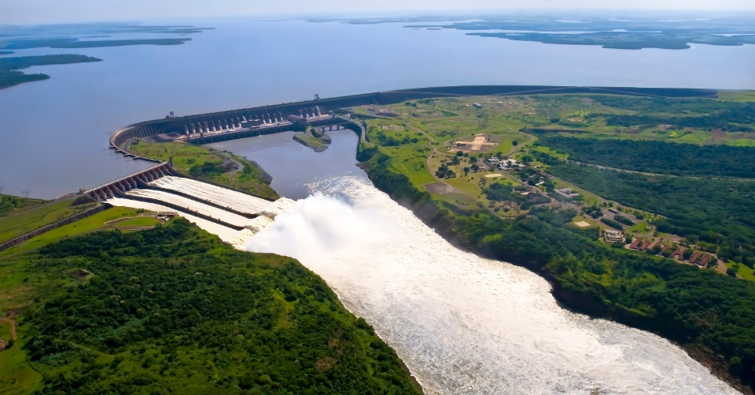

Como funciona uma usina hidrelétrica?
O princípio básico é usar a força de uma queda d'água para gerar energia elétrica. Essas usinas possuem enormes turbinas, parecidas com cata-ventos gigantes, que rodam impulsionadas pela pressão da água de um rio represado. Ao girar, as turbinas acionam geradores que produzirão energia. No Brasil, as hidrelétricas são as principais responsáveis pela luz que não nos deixa no escuro. Se bem que, no ano passado, vivemos na sombra do apagão, um período de racionamento provocado, entre outros motivos, pela falta de chuvas. Mas o que as chuvas têm a ver com eletricidade? É que, quando há um período grande de seca, os rios perdem volume e o nível do reservatório das usinas cai, diminuindo a força da queda d'água. Assim, as turbinas giram mais lentamente e produzem menos energia. Após a crise de 2001, o governo ampliou os planos para construir usinas movidas a queima de gás natural.
"Uma grande hidrelétrica custa muito caro para construir e tem grande impacto ambiental, mas por outro lado é uma fonte de energia limpa e renovável, que não depende de combustíveis fósseis", diz o engenheiro Lineu Belico dos Reis, autor do livro Energia Elétrica para o Desenvolvimento Sustentável e professor da USP. Enquanto os novos tipos de usina não ficam prontos, o Brasil continua dependendo de suas hidrelétricas. Só a de Itaipu, no rio Paraná, a maior do mundo, produz 12 600 megawatts, 25% do consumo de energia de todo o Brasil.
Vantagens de uma hidrelétrica:
Apesar do alto custo para a instalação de uma usina hidrelétrica, o preço do seu combustível (a água) é zero. É uma fonte de energia renovável e não emite poluentes, contribuindo assim na luta contra o aquecimento global. E para um país como o Brasil, cortado por imensos rios, torna-se uma fonte de energia vantajosa e altamente sustentável.
Desvantagens de uma hidrelétrica:
Apesar de ser uma fonte renovável e não emitir poluentes, as hidrelétricas causam grande impacto ambiental e social. Para a instalação desse tipo de usina e construção de barragens, que refreiam ocurso dos rios, é necessário o alagamento de grandes áreas. Essa prática acaba acarretando problemas à fauna e flora local, como:
- a destruição da vegetação natural,
- assoreamento do leito dos rios,
- desmoronamento de barreiras,
- extinção de certas espécies de peixes e torna o ambiente propício a transmissão de doenças como malária e esquistossomose.
Os impactos sociais também são visíveis com o deslocamento das populações ribeirinhas e indígenas, algumas que viviam na região há muitos anos, e são obrigadas a mudar-se por causa do alagamento para a construção dos lagos artificiais. E por serem geralmente construídas distante dos centros de consumo, o processo de transmissão de energia, que dá-se por fios, acaba tornando-se mais caro.
Quando o nível pluviométrico torna-se menor que o esperado, as hidrelétricas ficam com níveis de água abaixo do requisitado para a produção de energia normal e a geração de energia é transferida para outros tipos de usinas como as termelétricas e nucleares, encarecendo a conta do consumidor.
E apesar de ser uma fonte limpa de energia, apenas 18% da energia mundial é produzida pelas hidrelétricas, pois a maioria dos países não possuem as condições naturais necessárias para a construção dessas usinas.
Saiba mais sobre uma usina hidrelétrica clicando no link abaixo:
Fontes:
mundoestranho.abril.com.br
estudopratico.com.br